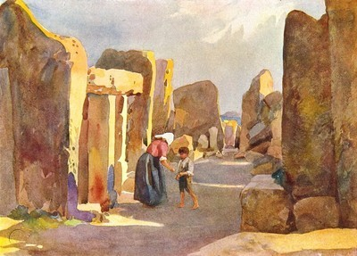

Ode to Malta

Ħaġar Qim temple, watercolour painting
Malta, including it's islands (Comino and Gozo), is a small European nation, resting between Italy and North Africa. Because of its size, and relative obscurity, it is very easy to forget and dismiss, in the slew of bigger, more powerful nations. Because of its small size, it wasn’t able to grow an empire the size of Rome, or Great Britain. Economically, it is impossible to compete with powerhouses such as the United States and the People’s republic of China, due to its lack of resources and land for industry. It is unable to house a large population, its current being only roughly 422,000, nearly half a million, 0.01% of the world’s total population. Because of its relatively unknown nature, it is often difficult to even find detailed and tangible information regarding the island, and it’s inhabitants. And so considering these factors, it is easy to view Malta in a dismissive light.
As the famous idiom states: 'big things come in small packages,' and Malta is no different. Despite its small size, Malta is an island with an interesting character. Giant nations and civilizations throughout the ages, have stepped upon its soil and made their mark. As my friend Zach stated, Malta is in essence, Europe’s bicycle, everyone has taken a ride. Prehistoric peoples left megalithic temples across the island, some of oldest standing man made structures, in the world. Phoenicians and Arabs from North Africa, gave us our Semitic tongue. Maltese is the only officially recognised, national Semetic language in the whole of Europe. Important people, such as St Paul, brought Christianity to everyone on the island. And powerful groups and empires such as the Knights of St John, and the British, brought their own culture to the Maltese people, contributing to its development. Because of this, our nation is deep rooted with a unique culture and history that we are all proud of.
This website will be a celebration of that culture, and everything this island has to offer.